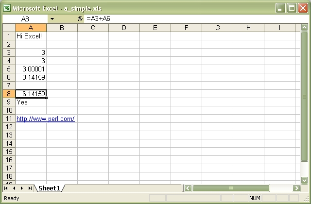

The Spreadsheet::WriteExcel Perl module can be used to create an Excel binary file on any platform that perl runs on. Multiple worksheets can be added to a workbook and formatting can be applied to cells. Text, numbers, formulas, hyperlinks, images and charts can be added.
The file produced by this module is compatible with Excel 97, 2000, 2003 and 2007.
This module will work on Windows, Linux, UNIX and Mac platforms. Generated files are also compatible with the Linux/UNIX spreadsheet applications Gnumeric and OpenOffice.org.
This module cannot be used to write to an existing Excel file (see the Modifying and Rewriting Excel Files section of the main documentation for more details).
The following example shows some of the basic features of Spreadsheet::WriteExcel.
#!/usr/bin/perl -w
use strict;
use Spreadsheet::WriteExcel;
# Create a new workbook called simple.xls and add a worksheet.
my $workbook = Spreadsheet::WriteExcel->new('simple.xls');
my $worksheet = $workbook->add_worksheet();
# The general syntax is write($row, $column, $token).
# Note that row and column are zero indexed.
# Write some text.
$worksheet->write(0, 0, 'Hi Excel!');
# Write some numbers.
$worksheet->write(2, 0, 3); # Writes 3
$worksheet->write(3, 0, 3.00000); # Writes 3
$worksheet->write(4, 0, 3.00001); # Writes 3.00001
$worksheet->write(5, 0, 3.14159); # An approximation
# Write some formulas.
$worksheet->write(7, 0, '=A3 + A6');
$worksheet->write(8, 0, '=IF(A5>3,"Yes", "No")');
# Write a hyperlink.
$worksheet->write(10, 0, '"http://www.perl.com/"
__END__
This will generate an output file that looks like this:

There is a lot of documentation for Spreadsheet::WriteExcel, both on-line:
And locally:
If you found Spreadsheet::WriteExcel useful and would like to donate to the project, you can do so via PayPal.